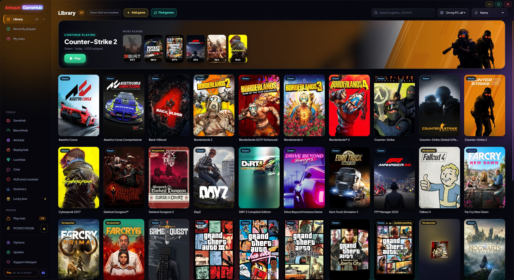

Your whole library in one place
Steam, Epic, GOG, Xbox, Ubisoft, EA, Battle.net, Amazon, Rockstar and games that have no launcher, together.
GameHub looks at what you already have on your PC: the folders and files each store's launcher keeps. That's how it finds your installed games and also the ones you own but haven't installed, with their covers and the hours you've played. Hours are counted even if you open the game from its own launcher.
In the sidebar, clicking Library opens your stores with how many games you have in each one (also the ones whose app is installed even if they have no games yet). You can sort by name, by last played, by hours or by size, search instantly and see what you played recently.
Games without a launcher (an emulator, an itch.io game…) are added with the “Add game” button, or you tell GameHub which folders hold your loose games and it finds them on its own. It looks for the official Steam cover also for games from other stores, added by hand or delisted from the store; if there's none, it uses the game's icon, and you can always set your own image.
A game you have in several stores or in the same folder shows up only once. And if Steam is updating a game, you see it on its card (“Updating 45%” or “Update pending”).
If something that isn't a game slips in (a program, a server…), you remove it and GameHub learns. You can get it back in Options → Library.
It never asks for the password of any store: to play, it opens each game with its own launcher, as if you'd opened it yourself.
Your Xbox / Microsoft Store and Ubisoft games show up even if they aren't installed, and Game Pass games can be hidden. Series are sorted by release date, and covers and backgrounds are saved on your PC: they show up instantly, even offline.
How to use it
- Open it and wait a few seconds: your games show up on their own.
- Double-click or the “Play” button (below the cover) to open a game.
- “Show N not installed” also shows the ones you haven't installed.
- “Find games” checks your stores again right away.

Give it a try?
⬇ Direct download 🛍️ Download from Microsoft StoreWindows 10 and 11 (64-bit) · Free · Updates itself